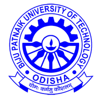
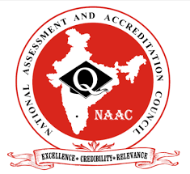
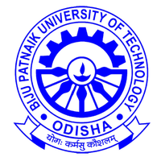
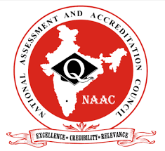

Why EATM?
EATM (Einstein Academy of Technology and Management) stands out as a premier institute in Odisha for Engineering and Management courses. Renowned for its excellence, EATM boasts a team of expert faculties who are dedicated to providing top-notch education. The institute features a hi-tech campus equipped with state-of-the-art laboratories, ensuring students have access to the latest technology and tools for their academic and practical training. EATM’s commitment to student success is reflected in its impressive 100% placement record, demonstrating the institute’s strong industry connections and robust placement support. In addition to its academic offerings, EATM provides a range of facilities designed to enhance the overall educational experience, making it a preferred choice for aspiring engineers and managers in the region.
VISION
To grow into an ideal technical institution by imparting affordable, job-oriented, progressive and self-reliant education to all sections of the society, keeping abreast of the advancements in science and technology along with promotion of research activities to enable every individual to be successful in this technically competitive era.
MISSION
Imparting quality technical and professional education through student-centric and innovative
teaching learning processes.
Emphasizing, supporting and supplementing the scientific temperament of associates for the
development of research activities.
Providing unremitting efforts to create first-rate technocrats and entrepreneurs through
dwindling the gap amid academia and industry.
Providing financial and moral support to needy segments of the society in technical studies.
Adapting and inculcating a strong set of ethical values among the budding technocrats.
“Teaching should be such that what is offered is perceived as a valuable gift and not as a hard duty.”– Albert Einstein
It had always been my dream to build an institution for quality, innovation, and excellence by maintaining a high standard of academic discipline...
 


